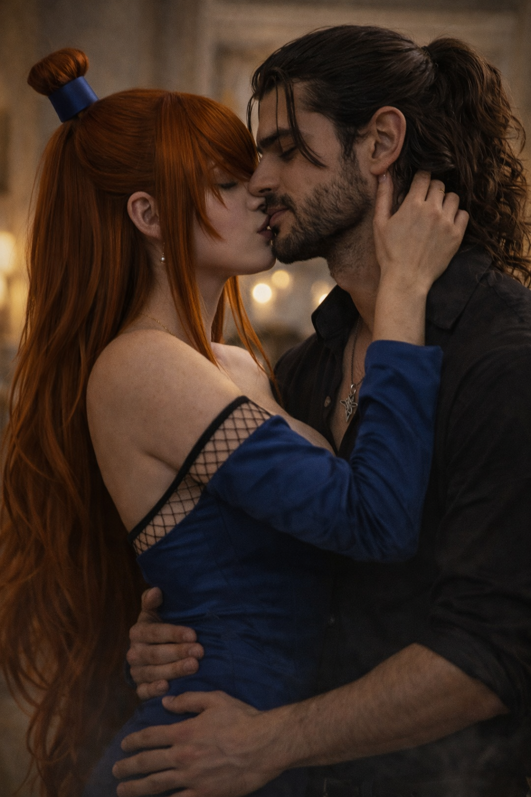
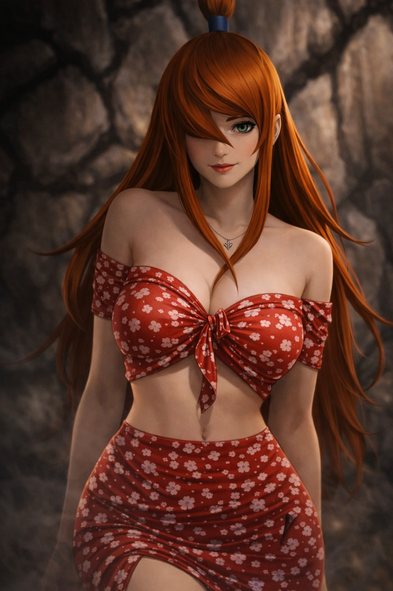
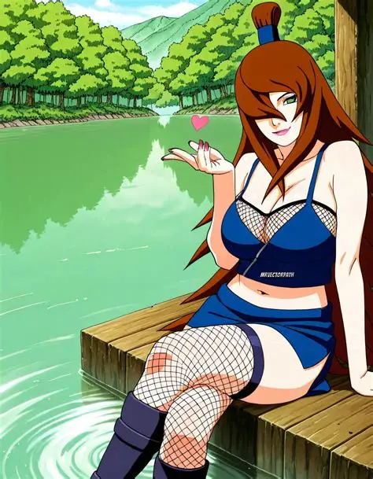
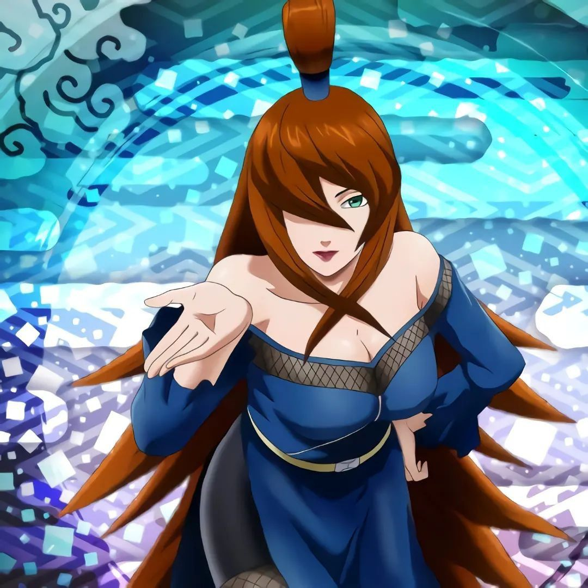
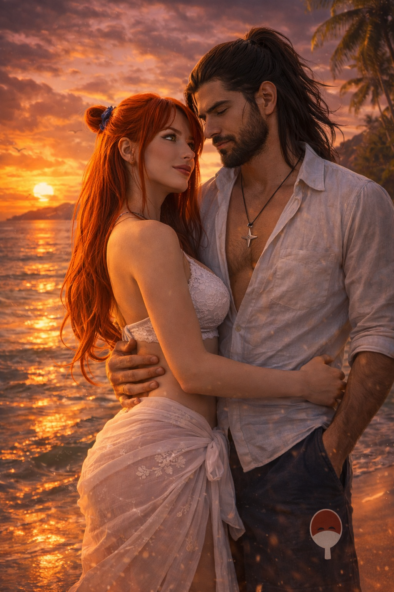
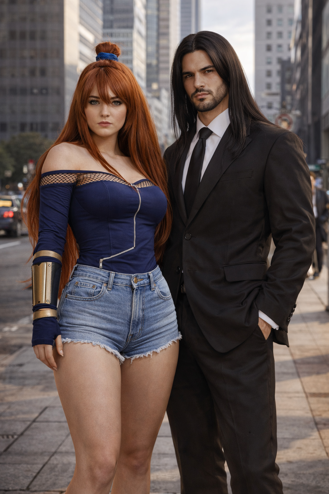

Kirigakure no Sato · Vila Oculta da Névoa
Quinta Mizukage · Portadora de Dois Kekkei Genkai
"Ela não pediu o trono da névoa.
Ela o conquistou — com lava, com água
e com a força que nenhum inimigo pôde quebrar."
Mei Terumi é uma das kunoichi mais completas e temidas da história ninja. Nascida em Kirigakure, cresceu durante um dos períodos mais brutais da vila — a era conhecida como Kiri Sangrenta, sob o domínio de Yagura, o Quarto Mizukage controlado por Obito Uchiha.
Sobreviver àquela época não era garantido. Prosperar nela era quase impossível. Mei não apenas sobreviveu — ela liderou a resistência que derrubou o regime e abriu caminho para uma nova era da Vila da Névoa.
Portadora do raro privilégio de dois Kekkei Genkai simultâneos — Yōton (Lava Release) e Futton (Boil Release) — ela é, no campo de batalha, uma força da natureza. Fora dele, é uma líder carismática, apaixonada e de palavra inabalável.
Controle excepcional sobre água em qualquer forma — vapor, pressão, fluxo. Mei pode criar dragões de água massivos, cortinas de névoa e barreiras líquidas de altíssima densidade. Sua precisão no uso de Suiton rivaliza com os maiores especialistas já vistos.
Fusão de Katon e Doton. Mei produz lava corrosiva capaz de dissolver quase qualquer material. Sua técnica mais famosa — Yōton: Lava Globs — lança esferas de magma que continuam corroendo mesmo após o impacto. Poucas defesas resistem ao contato direto.
Fusão de Katon e Suiton. Cria vapores ácidos de pH controlável — do inofensivo ao absolutamente letal. Sua técnica Futton: Skilled Mist envolve o campo de batalha com névoa corrosiva que dissolve qualquer substância orgânica ou inorgânica.
Mei Terumi nasceu e cresceu em Kirigakure durante o reinado do Quarto Mizukage, Yagura — um período tão brutal que a vila ficou mundialmente conhecida como Kiri Sangrenta. Nessa época, os portadores de Kekkei Genkai eram perseguidos, exterminados ou usados como armas descartáveis. Ter dois Kekkei Genkai era, em teoria, uma sentença de morte.
Mas Mei sobreviveu. Desde jovem demonstrou não apenas poder extraordinário, mas uma inteligência estratégica e uma vontade de ferro que nenhum regime conseguia dobrar. Ela aprendeu cedo que para sobreviver na névoa, era preciso ser mais perigosa do que a própria névoa.
Durante sua formação como kunoichi, Mei rapidamente se destacou como uma das mais talentosas de sua geração. O domínio simultâneo de Yōton e Futton — dois Kekkei Genkai completamente distintos — exigiu anos de disciplina brutal para controlar sem se destruir no processo.
Além dos elementos, ela aprimorou suas habilidades de Taijutsu, estratégia de campo e liderança. Com o tempo, começou a reunir ao seu redor outros ninjas descontentes com o regime de Yagura — kunoichi e shinobi que, como ela, queriam uma Kirigakure diferente.
Nasceu assim o embrião da resistência que mudaria a história da Vila da Névoa.
O que Mei e seus aliados não sabiam era que Yagura estava sob o controle de Obito Uchiha — seu Sharingan Mangekyō manipulava o Mizukage como um fantoche, usando Kirigakure como instrumento de caos e poder.
A resistência liderada por Mei enfrentou batalhas intensas contra forças muito superiores em número e poder institucional. Ela liderou de frente, usando seus Kekkei Genkai com precisão cirúrgica — vapores ácidos que cobriam campos de batalha inteiros, lava que derretia formações de ninjas antes que pudessem reagir.
Com a eventual quebra do controle sobre Yagura — e a morte do Quarto Mizukage — o caminho para uma nova liderança estava aberto. E havia apenas uma pessoa que todos sabiam que estava pronta para ocupar esse posto.
Mei Terumi foi proclamada Quinta Mizukage — a líder máxima de Kirigakure no Sato. Sua primeira missão como Kage não foi de conquista, mas de reconstrução: restaurar a honra e a estabilidade de uma vila que havia sido usada como instrumento de terror por décadas.
Sob sua liderança, Kirigakure começou uma abertura diplomática sem precedentes. Ela aboliu as políticas de perseguição a portadores de Kekkei Genkai, transformando a "maldição" que quase a matou em criança em um orgulho da vila.
Sua reputação no mundo ninja cresceu rapidamente: não apenas como guerreira temível, mas como líder sábia, justa e absolutamente inabalável.
Quando a Quarta Grande Guerra Ninja eclodiu, Mei foi uma das cinco sombras que formaram a Aliança Shinobi. No campo de batalha, sua presença era devastadora — ela enfrentou Madara Uchiha diretamente, usando seus vapores ácidos em um esforço desesperado para perfurar as defesas do ninja mais poderoso já conhecido.
Mesmo contra um adversário daquela magnitude, ela não recuou. Sua determinação e coragem em campo inspiraram aliados e intimidaram inimigos. A guerra confirmou o que todos já sabiam: Mei Terumi é, sem sombra de dúvida, uma das guerreiras mais formidáveis de sua geração.
Antes de se tornar Mizukage, Mei conheceu Kurosaki Nero durante uma missão diplomática entre Konoha e Kiri. Ela era uma kunoichi extremamente talentosa e respeitada. Ele era um ninja forte — mas, acima de tudo, gentil e honrado.
A conexão foi imediata, mas o dever os separou por anos. Quando Kurosaki retornou, ela estava nas fontes termais da sua vila — e o que sentiam um pelo outro estava exatamente onde haviam deixado.
Com o tempo, ela formou seu próprio pacto com um Dragão das Águas na caverna ancestral onde os dois haviam descoberto o portal dracônico. E quando Kurosaki — já Hokage interino — chegou até ela numa colina à beira-mar perguntando se podiam planejar o casamento, a resposta não precisou de muitas palavras.
Passe o mouse para pausar · Clique para ampliar · Adicione suas imagens nos slots






Crescer na Kiri Sangrenta e liderar uma revolução contra um regime controlado por um dos ninjas mais poderosos do mundo não é algo que alguém faz sem uma vontade de ferro. Mei nunca recua. Mesmo diante do impossível, ela encontra o caminho — ou abre um.
Ela não lidera pelo medo. As pessoas a seguem porque confiam nela — porque ela prova, repetidamente, que está disposta a fazer o que pede aos outros. No campo de batalha ou na sala de negociações, sua presença é magnética e sua palavra é lei.
Mei não esconde o que sente. Ela é direta ao ponto de ser refrescante — ou assustadora, dependendo de que lado você está. Quando algo ou alguém toca seu coração, ela não finge indiferença. E quando alguém cruza uma linha, ela também não.
Há uma elegância em Mei que contrasta com o poder destrutivo que carrega. Ela pode dissolver armaduras com vapor ácido e, no instante seguinte, conduzir uma negociação diplomática com charme e precisão cirúrgica. Essa dualidade é sua marca.